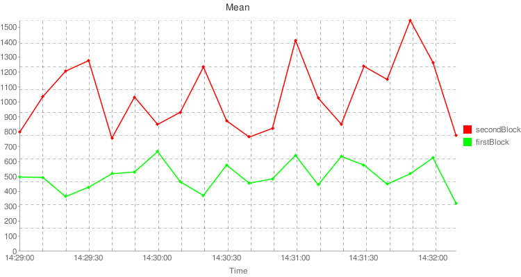
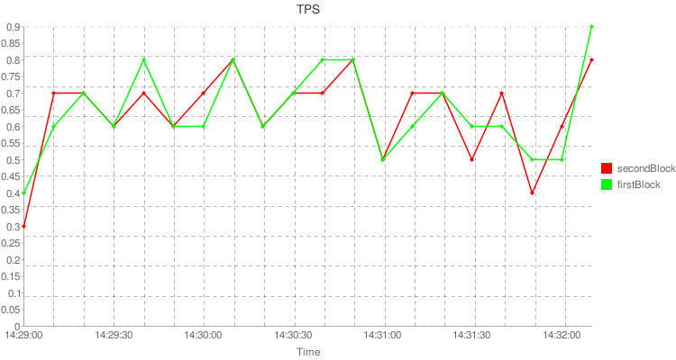
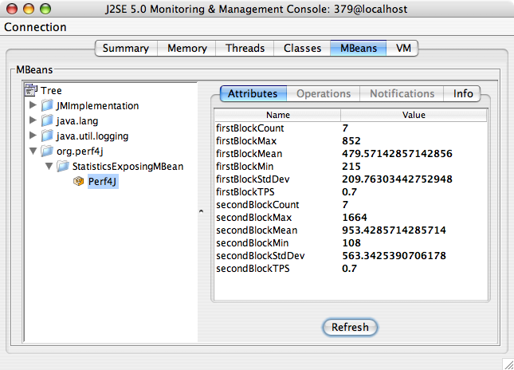

This guide describes how to incorporate Perf4J timing statements into your code, and how to use and enable various Perf4J tools to analyze and visualize the generated performance data. To run the examples you'll need to download the Perf4J jar file and place it in your classpath. Some of the the Perf4J tools require additional dependencies (for example, the custom log4j appenders require the log4j jar to also be in your classpath). The examples shown will specify these additional dependencies when necessary.
The org.perf4j.LoggingStopWatch class or one of its logging-framework specific subclasses is used to calculate execution times and log them as shown:
// Create the LoggingStopWatch to start timing. This constructor takes the tag
// name, which identifies the code block being timed. Note that usually you
// will want to instantiate one of the subclasses of LoggingStopWatch, such as
// a Log4JStopWatch or CommonsLogStopWatch depending on your preferred
// logging framework.
StopWatch stopWatch = new LoggingStopWatch("codeBlock1");
// Execute the code block - this is just a dummy call to pause execution for
// 0-1 second.
Thread.sleep((long)(Math.random() * 1000L));
// Stop the StopWatch and log it. LoggingStopWatches automatically log their
// timing statements when one of the stop() or lap() methods are called.
stopWatch.stop();The above block results in the following output to the standard error stream when the block is executed multiple times. Note that if you were using one of the LoggingStopWatch subclasses it would output to the log file configured in your logging framework:
INFO: start[1230448905165] time[704] tag[codeBlock1] INFO: start[1230448905898] time[564] tag[codeBlock1] INFO: start[1230448906462] time[367] tag[codeBlock1] INFO: start[1230448906830] time[153] tag[codeBlock1] INFO: start[1230448906983] time[830] tag[codeBlock1] INFO: start[1230448907813] time[834] tag[codeBlock1] INFO: start[1230448908648] time[229] tag[codeBlock1] INFO: start[1230448908877] time[93] tag[codeBlock1] INFO: start[1230448908970] time[748] tag[codeBlock1] INFO: start[1230448909720] time[559] tag[codeBlock1]
In addition to the stop watch tag, you can also specify an optional message. The tag and message can be specified either in the StopWatch constructor or in the call to stop(), which allows you to change the tag depending on the code being timed like so:
StopWatch stopWatch = new LoggingStopWatch();
try {
// the code block being timed - this is just a dummy example
long sleepTime = (long)(Math.random() * 1000L);
Thread.sleep(sleepTime);
if (sleepTime > 500L) {
throw new Exception("Throwing exception");
}
stopWatch.stop("codeBlock2.success", "Sleep time was < 500 ms");
} catch (Exception e) {
stopWatch.stop("codeBlock2.failure", "Exception was: " + e);
}The above code creates the sample following output when run in a loop:
INFO: start[1230493236109] time[447] tag[codeBlock2.success] message[Sleep time was < 500 ms] INFO: start[1230493236719] time[567] tag[codeBlock2.failure] message[Exception was: java.lang.Exception: Throwing exception] INFO: start[1230493237286] time[986] tag[codeBlock2.failure] message[Exception was: java.lang.Exception: Throwing exception] INFO: start[1230493238273] time[194] tag[codeBlock2.success] message[Sleep time was < 500 ms] INFO: start[1230493238467] time[463] tag[codeBlock2.success] message[Sleep time was < 500 ms] INFO: start[1230493238930] time[310] tag[codeBlock2.success] message[Sleep time was < 500 ms] INFO: start[1230493239241] time[610] tag[codeBlock2.failure] message[Exception was: java.lang.Exception: Throwing exception] INFO: start[1230493239852] time[84] tag[codeBlock2.success] message[Sleep time was < 500 ms] INFO: start[1230493239937] time[30] tag[codeBlock2.success] message[Sleep time was < 500 ms] INFO: start[1230493239968] time[852] tag[codeBlock2.failure] message[Exception was: java.lang.Exception: Throwing exception]
Note that in addition to explicitly creating StopWatches in code, you can also use the org.perf4j.aop.Profiled annotation to mark methods that should be timed. The use of the @Profiled annotation together with an aspect-oriented programming framework like AspectJ or Spring AOP is described below.
Once you have set up the logging in your application to log execution times, you will want to parse those log files to generate aggregated performance statistics such as mean, min and max times. Here is an example using the log parser. Note that org.perf4j.LogParser is configured as the main class to run in the perf4j jar file, so the parser can be run as follows:
java -jar perf4j-0.9.16.jar times.log
Sample output from the log parser looks like this:
Performance Statistics 20:32:00 - 20:32:30 Tag Avg(ms) Min Max Std Dev Count codeBlock1 249.4 2 487 151.3 37 codeBlock2.failure 782.9 612 975 130.8 17 codeBlock2.success 260.7 6 500 159.5 20 Performance Statistics 20:32:30 - 20:33:00 Tag Avg(ms) Min Max Std Dev Count codeBlock1 244.0 7 494 150.6 41 codeBlock2.failure 747.9 531 943 125.3 21 codeBlock2.success 224.1 26 398 106.8 21 Performance Statistics 20:33:00 - 20:33:30 Tag Avg(ms) Min Max Std Dev Count codeBlock1 289.3 10 464 141.1 22 codeBlock2.failure 781.1 599 947 135.1 8 codeBlock2.success 316.2 115 490 112.6 13
The log parser also supports output in comma-separated values format:
java -jar perf4j-0.9.16.jar -f csv times.log "codeBlock1",2009-02-01 16:24:00,2009-02-01 16:24:30,488.15624999999994,31,962,293.98800032643766,32 "codeBlock2.failure",2009-02-01 16:24:00,2009-02-01 16:24:30,772.6666666666667,535,962,119.15125774502854,15 "codeBlock2.success",2009-02-01 16:24:00,2009-02-01 16:24:30,237.11764705882356,31,461,125.37749228204501,17 "codeBlock1",2009-02-01 16:24:30,2009-02-01 16:25:00,412.69117647058846,0,979,289.32097265193715,68 "codeBlock2.failure",2009-02-01 16:24:30,2009-02-01 16:25:00,727.5,501,979,142.69959031799314,26 "codeBlock2.success",2009-02-01 16:24:30,2009-02-01 16:25:00,217.8095238095238,0,492,153.59009115100247,42
Note that if no log file is specified the Perf4J log parser by default reads from standard input. Thus, one way to get real-time performance statistics from a live application is to use the Unix tail command to pipe the raw log file to the log parser. The following example assumes a live application is writing StopWatch log messages to a times.log file. The performance statistics will be written to the console as new data is written to times.log:
tail -f times.log | java -jar perf4j-0.9.16.jar
In addition to generating performance statistics, the Perf4J log parser can also generate graphs. Here is an example:
java -jar perf4j-0.9.16.jar --graph perfGraphs.out times.log
This command writes performance graphs to the perfGraphs.out file using the Google Chart API. Here are some example Mean Time and Transactions Per Second graphs.
The Perf4J log parser contains a number of other options; use the --help flag to get more usage information.
One of the main benefits of Perf4J is that it allows performance analysis and monitoring on live production applications through extensions to common logging frameworks like log4j and logback. These custom log4j appenders can be configured through the standard configuration mechanisms to add functionality without requiring changes to code. Note that all of the examples given below assume that you have the log4j jar, version 1.2.14 or higher, in your classpath.
Important note for logback users: Support for the logback logging framework was added in Perf4J 0.9.16. All of the log4j appenders mentioned in the examples below have corresponding logback versions. See the javadoc for more information.
The most important Perf4J appender is the AsyncCoalescingStatisticsAppender. This appender takes all of the logged StopWatch messages within a specified timespan, aggregates them to a single GroupedTimingStatistics log message, and then sends this single message to any downstream appenders (such as FileAppenders or one of the other custom Perf4J appenders, described below).
Here is a sample log4j.xml file that is used to configure an AsyncCoalescingStatisticsAppender to log statistics data to a file. IMPORTANT Due to the fact that you must attach downstream appenders to an AsyncCoalescingStatisticsAppender for it to be useful, you cannot configure an AsyncCoalescingStatisticsAppender instance in a log4j.properties file, but instead must use the log4j XML config file format (this is also required when using a standard org.apache.log4j.AsyncAppender, for example).
<?xml version="1.0" encoding="UTF-8" ?>
<!DOCTYPE log4j:configuration SYSTEM "log4j.dtd">
<log4j:configuration debug="false" xmlns:log4j="http://jakarta.apache.org/log4j/">
<!--
This default ConsoleAppender is used to log all NON perf4j messages
to System.out
-->
<appender name="console" class="org.apache.log4j.ConsoleAppender">
<layout class="org.apache.log4j.PatternLayout">
<param name="ConversionPattern" value="%-5p %c{1} - %m%n"/>
</layout>
</appender>
<!-- Perf4J appenders -->
<!--
This AsyncCoalescingStatisticsAppender groups StopWatch log messages
into GroupedTimingStatistics messages which it sends on the
file appender defined below
-->
<appender name="CoalescingStatistics"
class="org.perf4j.log4j.AsyncCoalescingStatisticsAppender">
<!--
The TimeSlice option is used to determine the time window for which
all received StopWatch logs are aggregated to create a single
GroupedTimingStatistics log. Here we set it to 10 seconds, overriding
the default of 30000 ms
-->
<param name="TimeSlice" value="10000"/>
<appender-ref ref="fileAppender"/>
</appender>
<!-- This file appender is used to output aggregated performance statistics -->
<appender name="fileAppender" class="org.apache.log4j.FileAppender">
<param name="File" value="perfStats.log"/>
<layout class="org.apache.log4j.PatternLayout">
<param name="ConversionPattern" value="%m%n"/>
</layout>
</appender>
<!-- Loggers -->
<!--
The Perf4J logger. Note that org.perf4j.TimingLogger is the value of the
org.perf4j.StopWatch.DEFAULT_LOGGER_NAME constant. Also, note that
additivity is set to false, which is usually what is desired - this means
that timing statements will only be sent to this logger and NOT to
upstream loggers.
-->
<logger name="org.perf4j.TimingLogger" additivity="false">
<level value="INFO"/>
<appender-ref ref="CoalescingStatistics"/>
</logger>
<!--
The root logger sends all log statements EXCEPT those sent to the perf4j
logger to System.out.
-->
<root>
<level value="INFO"/>
<appender-ref ref="console"/>
</root>
</log4j:configuration>The following simple example class makes use of the above configuration file to write the performance logs:
import org.apache.log4j.*;
import org.perf4j.*;
public class Perf4JAppenderExample {
public static void main (String[] args) throws Exception {
// note that the log4j framework will automatically load the log4j.xml
// file if it is in a root directory on the classpath
Logger rootLogger = Logger.getRootLogger();
for (int i = 0; i < 50; i++) {
// By default the Log4JStopWatch uses the Logger named org.perf4j.TimingLogger
StopWatch stopWatch = new Log4JStopWatch();
// for demo purposes just sleep
Thread.sleep((long) (Math.random() * 1000L));
rootLogger.info("Normal logging messages only go to the console");
// Calling lap() stops timing for the previous block, sends the
// message to the log4j Logger, and starts timing the next block.
stopWatch.lap("firstBlock");
Thread.sleep((long) (Math.random() * 2000L));
stopWatch.stop("secondBlock");
}
}
}Note that only the messages logged with the rootLogger ("Normal logging messages only go to the console") are displayed on the console - this is because the additivity flag is set to false on the org.perf4j.TimingLogger in the log4j.xml config. Here is some sample output written to perfStats.log:
Performance Statistics 17:05:40 - 17:05:50 Tag Avg(ms) Min Max Std Dev Count firstBlock 434.2 128 869 309.7 6 secondBlock 968.4 196 1996 675.5 5 Performance Statistics 17:05:50 - 17:06:00 Tag Avg(ms) Min Max Std Dev Count firstBlock 523.0 178 793 225.8 6 secondBlock 1126.3 332 1560 377.6 7 Performance Statistics 17:06:00 - 17:06:10 Tag Avg(ms) Min Max Std Dev Count firstBlock 806.0 583 930 114.8 6 secondBlock 713.8 308 1045 282.1 6 Performance Statistics 17:06:10 - 17:06:20 Tag Avg(ms) Min Max Std Dev Count firstBlock 516.8 164 950 239.0 8 secondBlock 771.3 149 1853 491.0 8 Performance Statistics 17:06:20 - 17:06:30 Tag Avg(ms) Min Max Std Dev Count firstBlock 447.3 108 852 223.2 7 secondBlock 1102.2 406 1906 503.1 6 Performance Statistics 17:06:30 - 17:06:40 Tag Avg(ms) Min Max Std Dev Count firstBlock 511.3 30 892 254.7 6 secondBlock 1043.9 237 1350 368.2 7 Performance Statistics 17:06:40 - 17:06:50 Tag Avg(ms) Min Max Std Dev Count firstBlock 290.7 152 511 114.5 7 secondBlock 1128.0 598 1891 421.1 7 Performance Statistics 17:06:50 - 17:07:00 Tag Avg(ms) Min Max Std Dev Count firstBlock 530.5 138 902 278.7 4 secondBlock 1140.3 516 1649 447.5 4
Similar to the log parser, the log4j appender supports CSV-formatted output by way of the StatisticsCsvLayout. That is, by replacing the PatternLayout with a StatisticsCsvLayout on the fileAppender, output will be CSV formatted instead of text formatted as shown above. The StatisticsCsvLayout supports a number of options to customize which data values are output; see the javadoc for more information.
One of the main benefits of using the AsyncCoalescingStatisticsAppender is that other custom Perf4J appenders that handle GroupedTimingStatistics messages can be attached to an AsyncCoalescingStatisticsAppender in order to display or analyze the statistics in other useful ways. The GraphingStatisticsAppender uses the GroupedTimingStatistics to generate performance graphs. These graphs, which are implemented as URLs using the Google Chart API to create the actual graph images, can then be displayed in a browser, or exposed in a running web server.
The log4j.xml shown below extends the log4j.xml previously shown with the new GraphingStatisticsAppenders:
<?xml version="1.0" encoding="UTF-8" ?>
<!DOCTYPE log4j:configuration SYSTEM "log4j.dtd">
<log4j:configuration debug="false" xmlns:log4j="http://jakarta.apache.org/log4j/">
<!--
This default ConsoleAppender is used to log all NON perf4j messages
to System.out
-->
<appender name="console" class="org.apache.log4j.ConsoleAppender">
<layout class="org.apache.log4j.PatternLayout">
<param name="ConversionPattern" value="%-5p %c{1} - %m%n"/>
</layout>
</appender>
<!-- Perf4J appenders -->
<!--
This AsyncCoalescingStatisticsAppender groups StopWatch log messages
into GroupedTimingStatistics messages which it sends on the
file appender defined below
-->
<appender name="CoalescingStatistics"
class="org.perf4j.log4j.AsyncCoalescingStatisticsAppender">
<!--
The TimeSlice option is used to determine the time window for which
all received StopWatch logs are aggregated to create a single
GroupedTimingStatistics log. Here we set it to 10 seconds, overriding
the default of 30000 ms
-->
<param name="TimeSlice" value="10000"/>
<appender-ref ref="fileAppender"/>
<!--
Note how the GraphingStatisticsAppenders have been attached to the
CoalescingStatistics here.
-->
<appender-ref ref="graphExecutionTimes"/>
<appender-ref ref="graphExecutionTPS"/>
</appender>
<!-- This file appender is used to output aggregated performance statistics -->
<appender name="fileAppender" class="org.apache.log4j.FileAppender">
<param name="File" value="perfStats.log"/>
<layout class="org.apache.log4j.PatternLayout">
<param name="ConversionPattern" value="%m%n"/>
</layout>
</appender>
<!--
This first GraphingStatisticsAppender graphs Mean execution times for the
firstBlock and secondBlock tags
-->
<appender name="graphExecutionTimes"
class="org.perf4j.log4j.GraphingStatisticsAppender">
<!-- Possible GraphTypes are Mean, Min, Max, StdDev, Count and TPS -->
<param name="GraphType" value="Mean"/>
<!-- The tags of the timed execution blocks to graph are specified here -->
<param name="TagNamesToGraph" value="firstBlock,secondBlock"/>
<appender-ref ref="graphsFileAppender"/>
</appender>
<!--
This second GraphingStatisticsAppender graphs transactions per second
for the firstBlock and secondBlock tags
-->
<appender name="graphExecutionTPS"
class="org.perf4j.log4j.GraphingStatisticsAppender">
<param name="GraphType" value="TPS"/>
<param name="TagNamesToGraph" value="firstBlock,secondBlock"/>
<appender-ref ref="graphsFileAppender"/>
</appender>
<!--
This file appender is used to output the graph URLs generated
by the GraphingStatisticsAppenders
-->
<appender name="graphsFileAppender" class="org.apache.log4j.FileAppender">
<param name="File" value="perfGraphs.log"/>
<layout class="org.apache.log4j.PatternLayout">
<param name="ConversionPattern" value="%m%n"/>
</layout>
</appender>
<!-- Loggers -->
<!--
The Perf4J logger. Note that org.perf4j.TimingLogger is the value of the
org.perf4j.StopWatch.DEFAULT_LOGGER_NAME constant. Also, note that
additivity is set to false, which is usually what is desired - this means
that timing statements will only be sent to this logger and NOT to
upstream loggers.
-->
<logger name="org.perf4j.TimingLogger" additivity="false">
<level value="INFO"/>
<appender-ref ref="CoalescingStatistics"/>
</logger>
<!--
The root logger sends all log statements EXCEPT those sent to the perf4j
logger to System.out.
-->
<root>
<level value="INFO"/>
<appender-ref ref="console"/>
</root>
</log4j:configuration>Here are some sample Google Chart API URLs that are written to the perfGraphs.log file together with the rendered graphs:
 Another useful custom Perf4J appender is the JmxAttributeStatisticsAppender. This appender exposes performance statistics as attributes on a JMX MBean, and in addition it allows you to set thresholds for these statistics and send notifications when the logged values exceed the thresholds. There are many third party tools that are designed to interact with and monitor applications through JMX. Thus, exposing performance statistics through JMX opens a whole suite of additional functionality.
Again, extending the log4j.xml shown previously, the example file below adds a JmxAttributeStatisticsAppender to the CoalescingStatistics appender:
<?xml version="1.0" encoding="UTF-8" ?>
<!DOCTYPE log4j:configuration SYSTEM "log4j.dtd">
<log4j:configuration debug="false" xmlns:log4j="http://jakarta.apache.org/log4j/">
<!--
This default ConsoleAppender is used to log all NON perf4j messages
to System.out
-->
<appender name="console" class="org.apache.log4j.ConsoleAppender">
<layout class="org.apache.log4j.PatternLayout">
<param name="ConversionPattern" value="%-5p %c{1} - %m%n"/>
</layout>
</appender>
<!-- Perf4J appenders -->
<!--
This AsyncCoalescingStatisticsAppender groups StopWatch log messages
into GroupedTimingStatistics messages which it sends on the
file appender defined below
-->
<appender name="CoalescingStatistics"
class="org.perf4j.log4j.AsyncCoalescingStatisticsAppender">
<!--
The TimeSlice option is used to determine the time window for which
all received StopWatch logs are aggregated to create a single
GroupedTimingStatistics log. Here we set it to 10 seconds, overriding
the default of 30000 ms
-->
<param name="TimeSlice" value="10000"/>
<appender-ref ref="fileAppender"/>
<appender-ref ref="graphExecutionTimes"/>
<appender-ref ref="graphExecutionTPS"/>
<!-- We add the JMX Appender reference onto the CoalescingStatistics -->
<appender-ref ref="perf4jJmxAppender"/>
</appender>
<!-- This file appender is used to output aggregated performance statistics -->
<appender name="fileAppender" class="org.apache.log4j.FileAppender">
<param name="File" value="perfStats.log"/>
<layout class="org.apache.log4j.PatternLayout">
<param name="ConversionPattern" value="%m%n"/>
</layout>
</appender>
<!--
This first GraphingStatisticsAppender graphs Mean execution times for the
firstBlock and secondBlock tags
-->
<appender name="graphExecutionTimes"
class="org.perf4j.log4j.GraphingStatisticsAppender">
<!-- Possible GraphTypes are Mean, Min, Max, StdDev, Count and TPS -->
<param name="GraphType" value="Mean"/>
<!-- The tags of the timed execution blocks to graph are specified here -->
<param name="TagNamesToGraph" value="firstBlock,secondBlock"/>
<appender-ref ref="graphsFileAppender"/>
</appender>
<!--
This second GraphingStatisticsAppender graphs transactions per second
for the firstBlock and secondBlock tags
-->
<appender name="graphExecutionTPS"
class="org.perf4j.log4j.GraphingStatisticsAppender">
<param name="GraphType" value="TPS"/>
<param name="TagNamesToGraph" value="firstBlock,secondBlock"/>
<appender-ref ref="graphsFileAppender"/>
</appender>
<!--
This file appender is used to output the graph URLs generated
by the GraphingStatisticsAppenders
-->
<appender name="graphsFileAppender" class="org.apache.log4j.FileAppender">
<param name="File" value="perfGraphs.log"/>
<layout class="org.apache.log4j.PatternLayout">
<param name="ConversionPattern" value="%m%n"/>
</layout>
</appender>
<!--
This JMX appender creates an MBean and publishes it to the platform MBean server by
default.
-->
<appender name="perf4jJmxAppender" class="org.perf4j.log4j.JmxAttributeStatisticsAppender">
<!--
You must specify the tag names whose statistics should be exposed as
MBean attributes.
-->
<param name="TagNamesToExpose" value="firstBlock,secondBlock"/>
<!--
The NotificationThresholds param configures the sending of JMX notifications
when statistic values exceed specified thresholds. This config states that
the firstBlock max value should be between 0 and 800ms, and the secondBlock max
value should be less than 1500 ms. You can also set thresholds on the Min,
Mean, StdDev, Count and TPS statistics - e.g. firstBlockMean(<600).
-->
<param name="NotificationThresholds" value="firstBlockMax(0-800),secondBlockMax(<1500)"/>
<!--
You can also specify an optional MBeanName param, which overrides
the default MBean name of org.perf4j:type=StatisticsExposingMBean,name=Perf4J
-->
</appender>
<!-- Loggers -->
<!--
The Perf4J logger. Note that org.perf4j.TimingLogger is the value of the
org.perf4j.StopWatch.DEFAULT_LOGGER_NAME constant. Also, note that
additivity is set to false, which is usually what is desired - this means
that timing statements will only be sent to this logger and NOT to
upstream loggers.
-->
<logger name="org.perf4j.TimingLogger" additivity="false">
<level value="INFO"/>
<appender-ref ref="CoalescingStatistics"/>
</logger>
<!--
The root logger sends all log statements EXCEPT those sent to the perf4j
logger to System.out.
-->
<root>
<level value="INFO"/>
<appender-ref ref="console"/>
</root>
</log4j:configuration>When running an application locally you can enable JMX by passing the system property com.sun.management.jmxremote on the command line, e.g.:
java -Dcom.sun.management.jmxremote -cp .:./perf4j-0.9.16.jar:./log4j-1.2.14.jar Perf4JAppenderExample
Once the application is running, you can view the MBeans using the jconsole tool provided with the Sun JDK. Here is a screenshot showing the Perf4J MBean:
Note that the exposed MBean supports two operations, exposeTag and removeTag, that allow you to change, at runtime, which tags' statistics are exposed as attributes. This is helpful if you are unsure, at deployment time, which tags are being logged in the application.
For more information on JMX see Sun's JMX website.
One of the most common application types that require good performance monitoring are web applications. If you have previously configured a GraphingStatisticsAppender as described above, you can load a GraphingServlet in your web.xml file to expose performance graphs through a browser front end. Here is an example web.xml file:
<?xml version="1.0" encoding="UTF-8"?>
<web-app version="2.4"
xmlns="http://java.sun.com/xml/ns/j2ee"
xmlns:xsi="http://www.w3.org/2001/XMLSchema-instance"
xsi:schemaLocation="http://java.sun.com/xml/ns/j2ee
http://java.sun.com/xml/ns/j2ee/web-app_2_4.xsd">
<servlet>
<servlet-name>perf4j</servlet-name>
<servlet-class>org.perf4j.log4j.servlet.GraphingServlet</servlet-class>
<!--
The graphNames parameter determines which graphs to expose. The
param-value should be a comma-separated list of the
appender NAMES as defined in the log4j.xml file.
-->
<init-param>
<param-name>graphNames</param-name>
<param-value>graphExecutionTimes,graphExecutionTPS</param-value>
</init-param>
</servlet>
<servlet-mapping>
<servlet-name>perf4j</servlet-name>
<url-pattern>/perf4j</url-pattern>
</servlet-mapping>
</web-app>The GraphingServlet accesses the in-memory graph representations from the GraphingStatisticsAppenders when displaying the graphs, and thus it always displays the most up-to-date data. Also, you may find with the GraphingServlet that you no longer have a need for the GraphingStatisticsAppenders to write to a file. In that case you can remove any file appenders attached to the GraphingStatisticsAppenders in the log4j.xml file.
Note that as with the logback appenders, there is also a logback version of the GraphingServlet.
One of the downsides to adding StopWatch timing statements to code is that they can clutter the business logic of a method, reducing the "signal-to-noise ratio" of the code. The Profiled annotation provided by Perf4J provides a very clean way to time method calls while keeping the executable statements free from distracting StopWatch calls. Note that the Profiled annotation by itself just marks a method for profiling - it does not actually add any timing code. Instead, you must use an aspect-oriented programming framework, such as AspectJ or Spring AOP to inject timing aspects into your code.
In addition, Perf4J has also added support for EJB Interceptors. In the case of EJB interceptors, the Profiled annotation is optional, and only needs to be specified if you wish to override the default tag name and message.
Adding the Profiled annotation to Java methods is a very simple and straightforward process. The following class displays a number of sample methods and usages of the Profiled annotation:
import org.perf4j.aop.*;
public class ProfiledExample {
public static void main (String[] args) throws Exception {
// run all of the examples
for (int i = 0; i < 50; i++) {
simpleExample();
simpleExampleWithExplicitTag();
dynamicTagExample("iIs" + (i % 2 == 0 ? "Even" : "Odd"));
dynamicMessageExample(i % 2 == 0 ? 1000L : 2000L);
if (i % 2 == 0) {
logFailuresSeparatelyExample(false);
} else {
try {
logFailuresSeparatelyExample(true);
} catch (Exception e) { /* expected */ }
}
nonDefaultLoggerNameExample();
System.out.println("Ran loop " + i);
}
}
/**
* When the Profiled annotation is used without any parameters, the simple
* name of the method is used as the tag for any logged timing statements
*/
@Profiled
public static void simpleExample() throws InterruptedException {
Thread.sleep((long) (Math.random() * 1000L));
}
/**
* Here we set the tag name to an explicit value.
*/
@Profiled(tag = "simpleBlock")
public static void simpleExampleWithExplicitTag() throws InterruptedException {
Thread.sleep((long) (Math.random() * 1000L));
}
/**
* One very useful feature of the Profiled annotation is the ability to
* dynamically set the tag name based on the value of a method parameter.
* You can make use of Jakarta Commons Java Expression Language (JEXL) in
* curly braces in the tag name. The first parameter is assigned the variable
* name $0, the second $1, etc. For example, if I had a method that took as
* the first parameter an object with a bean accessor method "getFoo()", I
* could write a tag as "myTag_{$0.foo}".
*
* In addition to method parameters, you can also access the following variables
* in JEXL expressions:
*
* $this - the object whose method is being called.
* $return - the return value from the method (this will be null if the method
* has a void return type or if the method throws an exception).
* class java.lang.Object - the Class instance of the class owning the method being called.
* $methodName - the name of the method being called.
* $exception - if the method completes by throwing an exception, the $exception
* variable can be used to access the exception (this will be null
* if the method completes normlly).
*
*/
@Profiled(tag = "dynamicTag_{$0}")
public static void dynamicTagExample(String tagName) throws InterruptedException {
Thread.sleep((long) (Math.random() * 1000L));
}
/**
* You can also specify a message to be logged in the Profiled annotation.
*/
@Profiled(tag = "messageExample", message = "Requested sleep time was {$0 / 1000} seconds")
public static void dynamicMessageExample(long requestedSleepTimeInMS) throws InterruptedException {
Thread.sleep((long) (Math.random() * requestedSleepTimeInMS));
}
/**
* Often times you want to log failures (where a method completes by throwing an exception)
* separately from when a method completes normally. If you set the logFailuresSeparately
* parameter to true, then the tag given to cases when the method completes normally will
* be yourSpecifiedTagName.success, and when an exception is thrown the tag name will be
* yourSpecifiedTagName.failure. This allows you to calculate separate performance statistics
* for success and failure cases.
*/
@Profiled(tag = "failuresSeparatelyExample", logFailuresSeparately = true)
public static void logFailuresSeparatelyExample(boolean shouldFail) throws Exception {
Thread.sleep((long) (Math.random() * 1000L));
if (shouldFail) {
throw new Exception("Method threw exception");
}
}
/**
* By default timing statements are logged to the logger named
* StopWatch.DEFAULT_LOGGER_NAME (i.e. org.perf4j.TimingLogger),
* but this can be overridden.
*/
@Profiled(tag = "loggerExample", logger = "org.perf4j.MyCustomLoggerName")
public static void nonDefaultLoggerNameExample() throws InterruptedException {
Thread.sleep((long) (Math.random() * 1000L));
}
}If you compile and run this class you will notice that no timing statements are printed to any logs. This is because you need to integrate one of the timing aspects that ship with Perf4J using one of the methods described below.
AspectJ is an aspect-oriented programming extension for Java hosted by the Eclipse Foundation. Perf4J ships with aspects that will "surround" methods that have the Profiled annotation with LoggingStopWatch timing statements (if desired you can examine the code for the AbstractTimingAspect and log4j TimingAspect classes to see what they do). AspectJ provides several ways to "weave" these aspects into code, one of which is to use the AspectJ load-time weaver, which injects the aspect code into the woven classes as they are loaded.
IMPORTANT To use AspectJ's load-time weaver and the aspect code you will need the following jars:
To run the AspectJ weaver, you will first need to create an "aop.xml" file which must exist at META-INF/aop.xml in the classpath. Here is an example:
<!DOCTYPE aspectj PUBLIC "-//AspectJ//DTD//EN" "http://www.eclipse.org/aspectj/dtd/aspectj.dtd">
<aspectj>
<!--
We only want to weave in the log4j TimingAspect into the @Profiled classes.
Note that Perf4J provides TimingAspects for the most popular Java logging
frameworks and facades: log4j, java.util.logging, Apache Commons Logging
and SLF4J. The TimingAspect you specify here will depend on which logging
framework you wish to use in your code.
-->
<aspects>
<aspect name="org.perf4j.log4j.aop.TimingAspect"/>
<!-- if SLF4J/logback use org.perf4j.slf4j.aop.TimingAspect instead -->
</aspects>
<weaver options="-verbose -showWeaveInfo">
<!--
Here is where we specify the classes to be woven. You can specify package
names like com.company.project.*
-->
<include within="ProfiledExample"/>
</weaver>
</aspectj>The complete set of steps to run the ProfiledExample class defined above with profiling enabled is:
javac -cp perf4j-0.9.16.jar ProfiledExample.java
java -cp .:perf4j-0.9.16.jar:log4j-1.2.14.jar:aspectjrt-1.6.1.jar:commons-jexl-1.1.jar:commons-logging-1.0.3.jar -javaagent:aspectjweaver-1.6.1.jar ProfiledExample
When the ProfiledExample class is executed with the integrated timing statements log files are generated just as if the StopWatch timing statements were written directly in the code:
Performance Statistics 19:53:20 - 19:53:30 Tag Avg(ms) Min Max Std Dev Count dynamicTag_iIsEven 44.0 44 44 0.0 1 dynamicTag_iIsOdd 561.0 561 561 0.0 1 failuresSeparatelyExample.failure 775.0 736 814 39.0 2 failuresSeparatelyExample.success 81.0 81 81 0.0 1 messageExample 868.7 742 965 93.5 3 simpleBlock 576.5 265 888 311.5 2 simpleExample 727.0 599 855 128.0 2
The AspectJ compiler, ajc, allows you to weave the timing aspects into your code at compile time. You will need to download the AspectJ toolset and install it first. Using the ProfiledExample class from above, you can integrate the aspects using the following steps.
IMPORTANT In addition to the main perf4j-0.9.16.jar file, Perf4J also provides jars that are specific to each of the different logging frameworks that contain only the TimingAspect specific to that framework. You can download the jar with the logging framework you wish to use from the downloads page. When calling ajc it is critical that you do NOT use the main perf4j-0.9.16.jar in your inpath. If you do this, ajc will weave ALL defined aspects into your classes, and you always only want one TimingAspect to run for each method you have marked with the Profiled annotation. The example steps below assume you are using log4j.
$ASPECTJ_DIR/bin/ajc -classpath $ASPECTJ_DIR/lib/aspectjrt.jar -1.5 -inpath perf4j-0.9.16-log4jonly.jar -outjar profiledExampleWoven.jar ProfiledExample.java
This will create a new jar named profiledExampleWoven.jar that includes the ProfiledExample class with the log4j TimingAspects integrated to execute around the methods with the Profiled annotation.
java -cp .:profiledExampleWoven.jar:$ASPECTJ_DIR/lib/aspectjrt.jar:log4j-1.2.14.jar:commons-jexl-1.1.jar:commons-logging-1.0.3.jar ProfiledExample
Note that if you execute the program with perf4j-0.9.16-log4jonly.jar in the classpath you are likely to see "java.lang.NoSuchMethodError: aspectOf" errors thrown in your code. This is because perf4j-0.9.16-log4jonly.jar has only been compiled with javac, not the ajc compiler (compiling with the ajc compiler first would cause problems with load-time weaving). Thus, if you do see this error be sure that the default perf4j jars are not in your class path and that you are using the -inpath and -outjar options of ajc correctly.
There are a number of different ways to compile with ajc. For more information, see the ajc documentation.
The Spring Application Framework provides a large toolset for working with aspects and integrating them with Spring-managed beans. If you already use Spring in your application, Spring AOP may be the simplest method for integrating the timing aspects into your code, provided you can live with the restrictions outlined below. Note that the small example given here makes use of just a small part of Spring AOP; you will likely want to review the Spring AOP documentation for more information.
Spring AOP uses a proxy-based framework to weave aspects into Spring-managed beans, either using JDK dynamic proxies (when the bean being proxied implements at least one interface) or CGLIB proxies. As such, there are a couple of important restrictions when using Spring AOP:
If your code does not fit these restrictions, Spring still has some utilities for using native AspectJ load-time weaving with Spring - see Spring's load-time weaving documentation for more.
For this example, assume we have the following class that we will load as a Spring-managed bean:
import java.math.BigInteger;
import org.perf4j.aop.Profiled;
public class PrimeGenerator {
//keeps track of the prime we're going to return
private BigInteger currentPrime = new BigInteger("0");
public void setCurrentPrime(BigInteger currentPrime) {
this.currentPrime = currentPrime;
}
@Profiled
public BigInteger nextPrime() {
currentPrime = currentPrime.nextProbablePrime();
return currentPrime;
}
}This simple bean just reports a running series of prime numbers. The Profiled annotation has been added to allow us to track the execution time of the nextPrime() method.
The following sample spring.xml file sets up the bean and uses Spring's autoproxy feature to weave in the log4j TimingAspect:
<?xml version="1.0" encoding="UTF-8"?>
<!-- Note how the aop namespace is defined in the top-level beans element -->
<beans xmlns="http://www.springframework.org/schema/beans"
xmlns:xsi="http://www.w3.org/2001/XMLSchema-instance"
xmlns:aop="http://www.springframework.org/schema/aop"
xsi:schemaLocation="http://www.springframework.org/schema/beans
http://www.springframework.org/schema/beans/spring-beans-2.0.xsd
http://www.springframework.org/schema/aop
http://www.springframework.org/schema/aop/spring-aop-2.0.xsd">
<!--
Including this aspectj-autoproxy element will cause spring to automatically
create proxies around any beans defined in this file that match the pointcuts
of any aspects defined in this file.
-->
<aop:aspectj-autoproxy/>
<!--
Declare the TimingAspect that we want to weave into the other beans
defined in this config file.
-->
<bean id="timingAspect" class="org.perf4j.log4j.aop.TimingAspect"/>
<!--
Because we included the aspectj-autoproxy element, Spring will automatically
create a proxy for this bean that runs the TimingAspect around any public
@Profiled methods on this bean.
-->
<bean id="primeGenerator" class="PrimeGenerator">
<property name="currentPrime"
value="12345678910111213141516171819202122232425262728293031323334353637383940"/>
</bean>
</beans>Finally, we provide a main class to start up Spring and call the nextPrime() method:
import org.springframework.context.ApplicationContext;
import org.springframework.context.support.FileSystemXmlApplicationContext;
public class SpringProfiledExample {
public static void main(String[] args) throws Exception {
//initialize Spring
ApplicationContext applicationContext = new FileSystemXmlApplicationContext("spring.xml");
//Spring will actually return a CGLIB-generated proxy here that injects
//the TimingAspects into the PrimeGenerator class.
PrimeGenerator primeGenerator = (PrimeGenerator) applicationContext.getBean("primeGenerator");
for (int i = 0; i < 500; i++) {
System.out.println("nextPrime() returned " + primeGenerator.nextPrime());
}
}
}To run the example:
javac -cp perf4j-0.9.16.jar:spring-2.0.6.jar PrimeGenerator.java SpringProfiledExample.java
java -cp .:perf4j-0.9.16.jar:spring-2.0.6.jar:aspectjrt-1.6.1.jar:aspectjweaver-1.6.1.jar:cglib-2.1_3.jar:asm-1.5.3.jar:log4j-1.2.14.jar:commons-jexl-1.1.jar:commons-logging-1.0.3.jar SpringProfiledExample
Some sample output printed to the perfStats.log file:
Performance Statistics 18:46:50 - 18:47:00 Tag Avg(ms) Min Max Std Dev Count nextPrime 31.3 24 73 6.9 277 Performance Statistics 18:47:00 - 18:47:10 Tag Avg(ms) Min Max Std Dev Count nextPrime 31.0 24 78 7.2 223
EJB 3.0 added support for interceptors, and Perf4J provides interceptors that add the timing calls when a target method is invoked. Here is an example of a session bean with a method that will be profiled:
@Stateless
public class HelloWorldBean implements HelloWorld {
@Interceptors(org.perf4j.log4j.aop.EjbTimingAspect.class)
public void sayHello() {
System.out.println("Hello!");
}
}When the sayHello method is executed, it will be wrapped by Log4JStopWatch start/stop calls. Note that the sayHello method has no Profiled annotation, and so by default the tag name used will be the method name (i.e. sayHello) and there will me no message on the stop watch. You can optionally add a Profiled annotation to the method if you wish to set a different tag name, or to otherwise take advantage of the configuration options that the Profiled annotation provides.